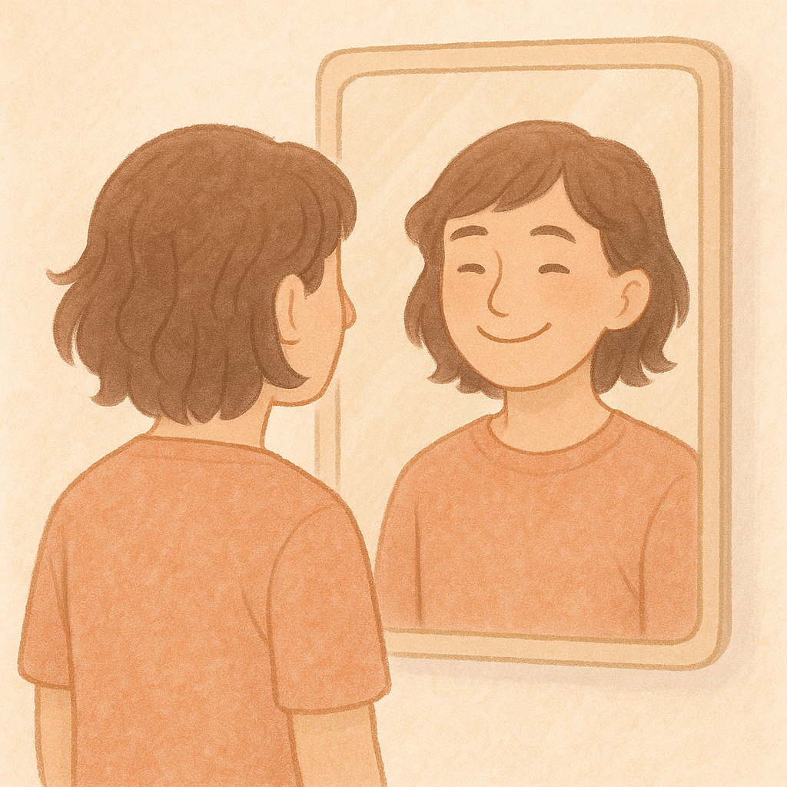

Índice
Introducción
Marco Teórico
Metodología
Resultados
Discusión
Conclusiones
Código
Salud Mental en Adolescentes
Nivel Medio Superior | Proyecto Escolar
📘 Índice
Introducción
1.1 Contexto del problema
Marco Teórico
2.1 Factores que afectan la salud mental de los adolescentes
2.2 Ansiedad o Depresión
2.2.1 Presión académica
2.2.2 Uso de redes sociales
2.2.3 Cambios hormonales y emocionales
2.3 Problemas familiares o internos
Metodología
3.1 Diseño del estudio
3.2 Población y muestra
3.3 Instrumentos de recolección de datos
3.4 Procedimiento de investigación
Resultados
4.1 Análisis de datos cuantitativos
4.2 Análisis de datos cualitativos
Discusión
5.1 Interpretación de los resultados
5.2 Comparación con estudios previos
5.3 Limitaciones del estudio
Conclusiones y Recomendaciones
6.1 Conclusiones principales
6.2 Recomendaciones para mejorar la salud mental en adolescentes
Anexos
7.1 Cuestionario

¡Sonríe! Tu salud mental es importante.